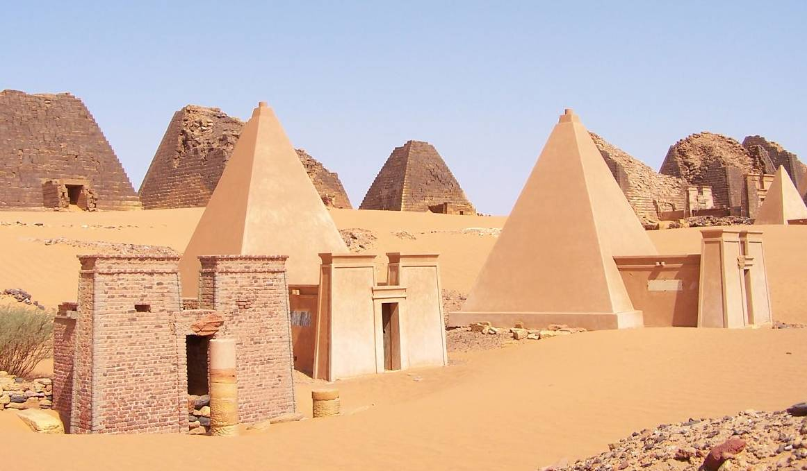
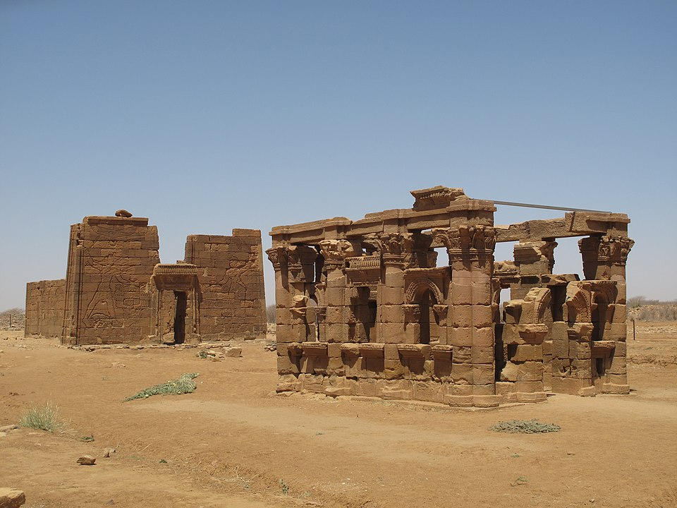
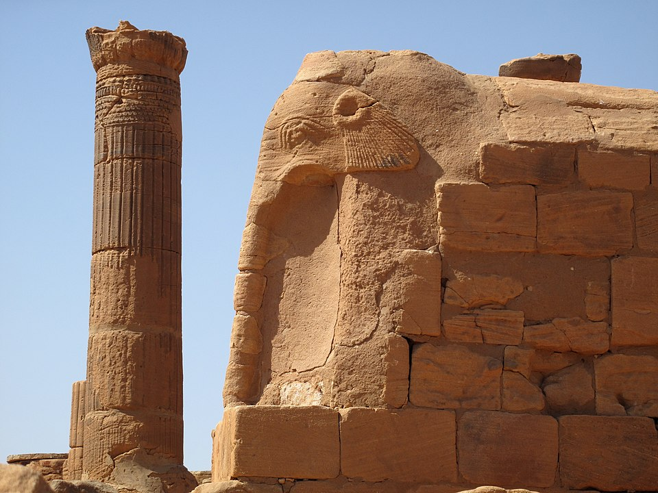

En aval de la sixième cataracte du Nil, un peu à l'écart du fleuve, au milieu d'une plaine désertique, s'élèvent des pyramides étranges, aux arêtes abruptes. C'est là, à Méroé, au cœur du Soudan, que furent inhumés les rois de la première civilisation connue d'Afrique noire. Appelé Koush par la Bible, Éthiopie par les Grecs et les Romains, le royaume méroïtique, qui occupa du troisième siècle av. J.-C. au quatrième siècle de notre ère un immense territoire de Philae à Khartoum, n'avait rien à envier à ses voisins du Nord, ces Égyptiens alors soumis à la domination grecque puis romaine, comme l'explique ci-dessous Claude Rilly, co-auteur du Répertoire d'épigraphie méroïtique (Académie des Inscriptions et Belles-Lettres-2000).

Une riche civilisation, héritière d'une culture fort ancienne
Les Méroïtes possédaient une administration efficace, des armées redoutées, des temples sans cesse embellis, une écriture ingénieuse, une agriculture prospère. Et surtout, ils tenaient les seules voies de commerce terrestre reliant le monde méditerranéen à l'Afrique subsaharienne, les pistes par où transitaient les caravanes convoyant l'or, l'ivoire, l'ébène, les peaux de panthère, les plumes d'autruche, les singes et les fauves.
Ce que nous appelons civilisation méroïtique n'est en fait que le dernier état d'une culture bien plus ancienne. De 2200 à 1550 av. J.-C., le royaume de Kerma, qui dominait la vallée du Nil entre les IIIe et IVe cataractes, était déjà, si l'on en croit les plus récentes recherches, de langue protoméroïtique. La conquête pharaonique sous la XVIIIe dynastie mit fin à ce pouvoir indigène. Il ressuscita cependant sept siècles plus tard avec le retrait des Égyptiens ; un nouveau royaume se développa alors autour de la métropole religieuse de Napata, sur le site actuel du Djebel Barkal.
En 730 av. J.-C., le roi koushite Piankhy s'empara de l'Égypte « au nom d'Amon », et les peuples du Proche-Orient abasourdis virent bientôt triompher jusqu'en Palestine ces guerriers hautains issus du cœur de l'Afrique, comme en témoigne le livre d'Isaïe. Pendant près de soixante ans, la XXVe dynastie dite « éthiopienne », dont les noms sont incontestablement méroïtiques, régna sur le pays des Pharaons, avant d'en être chassée par les invasions assyriennes. Dès lors, repliés sur le Nil moyen, les Koushites perpétuèrent une civilisation originale, appelée « royaume de Napata », où les influences égyptiennes se mêlaient aux traditions indigènes. Vers 300 av. J.-C., la nécropole des souverains fut transférée de Napata à Méroé, trois cents kilomètres au sud. C'est à partir de cette époque que l'on parle véritablement de civilisation méroïtique, même s'il s'agit de la même culture, de la même ethnie dominante et des mêmes institutions que précédemment. Les premiers spécialistes se fondèrent sur le récit mythique rapporté par l'historien grec Diodore de Sicile, selon lequel le roi philhellène Ergaménès (Arkamani en méroïtique) mit à mort les prêtres qui, jusqu'alors, avaient la haute main sur l'État et sur la vie même du souverain. C'est, croyait-on, pour éloigner de la royauté le clergé de Napata qu'il avait ensuite établi sa capitale à Méroé. On pense plutôt aujourd'hui que ce changement correspond à l'avènement d'une dynastie originaire du Sud.
Les nouveaux rois concentrèrent d'ailleurs leurs efforts de construction sur la région méridionale, sans toutefois négliger le reste du royaume.

Une religion et une écriture spécifiques, même si elles intègrent des éléments égyptiens
Des divinités autrefois locales reçurent un culte royal : Apedemak, le dieu à tête de lion, dispensateur de vie et protecteur de la nouvelle dynastie, eut désormais ses temples à Naga et à Musssawarat, au nord-est de Khartoum. D'autres dieux ou déesses, inconnus des Égyptiens, furent également honorés : Sebioumeker, figuré comme un pharaon coiffé de la double couronne, Amesemi, parèdre d'Apedemak, représentée avec les cheveux crépus couronnés d'un faucon, les traits fortement africains et les joues tailladées de scarifications rituelles. Les divinités égyptiennes gardent cependant les faveurs des Méroïtes : Amon, Mout, Horus, Hathor, Bès font toujours l'objet d'une fervente adoration. Le développement considérable du culte d'Isis que connaît le monde méditerranéen touche également Méroé ; son sanctuaire principal à Philae, à la frontière avec l'Égypte, est fréquenté assidûment par les pèlerins venus de Koush.
La création d'une écriture propre transcrivant la langue indigène est une autre caractéristique de la civilisation méroïtique. Les pharaons de la XXVe dynastie, et après eux les rois de Napata, employaient pour leurs inscriptions la langue et l'écriture égyptiennes. C'est à partir du IIe siècle av. J.-C. qu'apparaît à Koush une écriture spécifique, comportant vingt-trois caractères sous deux formes : l'une hiéroglyphique, rare et réservée à l'usage royal ou cultuel, l'autre cursive, abondamment employée par toutes les couches de la société. En raison du nombre restreint des signes, on a longtemps cru qu'ils composaient un alphabet, et une influence étrangère a même été suggérée. On sait maintenant qu'il s'agissait en fait d'un syllabaire simplifié, très proche du système utilisé en Inde ou au Tibet, mais élaboré sur place.
Les caractères cursifs dérivent du démotique, l'écriture stylisée de l'Égypte tardive, tel qu'il se présentait au IIIe siècle av. J.-C. Quant aux hiéroglyphes, ils correspondent à un choix, parfois déroutant, effectué plus tard dans le répertoire égyptien pour doter les rois de Méroé d'une écriture sacrée.
Le déchiffrement de l'écriture méroïtique, après soixante ans de tentatives infructueuses, fut réalisé en 1911 par le brillant égyptologue britannique Francis Llewelyn Griffith, mais un problème aigu se posa rapidement : l'idiome qu'on pouvait désormais lire était incompréhensible, et ne présentait aucun rapport éclairant avec les langues anciennes ou modernes connues dans cette partie de l'Afrique. Depuis bientôt un siècle, les recherches de Griffith, puis des Allemands et enfin de l'équipe française du professeur Leclant n'ont permis que de faibles progrès. Sur les quelque mille textes actuellement connus, seules les inscriptions funéraires sont relativement bien comprises. Les recherches continuent en raison de l'enjeu historique et linguistique que représenterait une éventuelle traduction, mais on ne sait si elles aboutiront un jour. Aucun document bilingue d'ampleur n'a encore été mis au jour. La langue méroïtique, l'« étrusque de l'Afrique », est une des énigmes les plus difficiles que nous aient léguées les civilisations antiques.

Des relations mouvementées avec son puissant voisin du Nord
Durant le règne des Ptolémées, le territoire méroïtique resta fréquemment l'ultime refuge pour les rebelles qui attisaient les révoltes en Haute-Égypte, et recevaient à l'occasion le soutien logistique des souverains de Koush.
La réplique des rois hellénistiques fut souvent brutale : en 185 av. J.-C., Ptolémée V non seulement reconquit la Thébaïde perdue depuis vingt ans, mais en profita pour annexer une grande partie de la Basse-Nubie. Le premier contact avec les armées romaines fut pire encore. En 25/24 av. J.-C., les Méroïtes attaquèrent Assouan, sous la direction de leur roi. Il semble que le monarque mourut peu après, et la riposte romaine, conduite par le préfet d'Égypte Caius Petronius, affronta les armées de son successeur, une « candace » borgne selon les historiens classiques (peut-être la reine Amanirenas). On ignore la signification exacte de ce titre habituellement traduit par « reine-mère », mais on sait qu'à plusieurs reprises, des femmes, désignées dans les textes officiels comme « candace » (kdke) et « souverain » (qore), montèrent sur le trône de Méroé. La victoire des Romains, mieux armés, mieux organisés, fut complète, et des ambassadeurs méroïtes durent rencontrer Auguste à Samos en 21/20 av. J.-C. L'empereur fit apparemment preuve de clémence, et une certaine cohabitation s'instaura pour longtemps dans la région de Philae entre les autorités romaines d'Égypte et celles de Méroé. Nous ne connaissons les événements que d'après les textes grecs ou latins, forcément partiaux. On a supposé que la grande stèle d'Amanirenas et Akinidad, retrouvée près de Méroé, relate la même guerre, et pourrait donc nous procurer le témoignage du camp adverse. Malheureusement, notre mauvaise connaissance de la langue méroïtique ne nous permet pas de comprendre son contenu. Après ces événements, le royaume de Koush vivra plus de deux cents ans de paix relative.
Des rois, des reines se succèdent, qui ne sont souvent pour nous qu'un nom sur une table d'offrandes funéraires ou le décor d'une pyramide. La candace Amanishakheto, qui succéda à Amanirenas et régna à l'époque du Christ, brille pour nous d'un éclat particulier : son trésor de bijoux, retrouvé dans sa pyramide de Méroé par un aventurier italien, est actuellement exposé à Munich et à Berlin.
À la fin du IIIe siècle, les « vice-rois » méroïtiques (peseto) de Basse-Nubie ont fort à faire pour juguler les invasions fréquentes des peuples venus du désert, Blemmyes et Nobades, ancêtres des actuels Bedja et Nubiens. La fin de Méroé est encore mal connue. Vers 350 Ezanas, le roi d'Axoum, affirme sur deux stèles qu'il a combattu victorieusement les Noba (Nubiens), traversant l'ancien territoire des Kasou (Koushites). On en a conclu qu'à cette époque, le royaume de Méroé avait succombé sous les coups des Nubiens, les Abyssins n'ayant fait qu'achever le travail. Cependant, les récentes fouilles d'El-Hobagi, près de la VIe cataracte, semblent montrer que la civilisation méroïtique a survécu quelque temps après le passage d'Ezanas. La gloire de Méroé était toutefois révolue, les anciens souverains oubliés, et dans les chambres funéraires pillées des pyramides royales, le sable commença à couler doucement.
Claude Rilly/Clio 2001